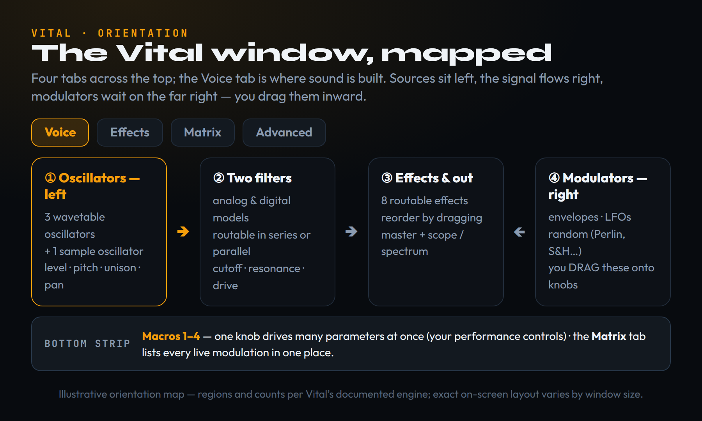
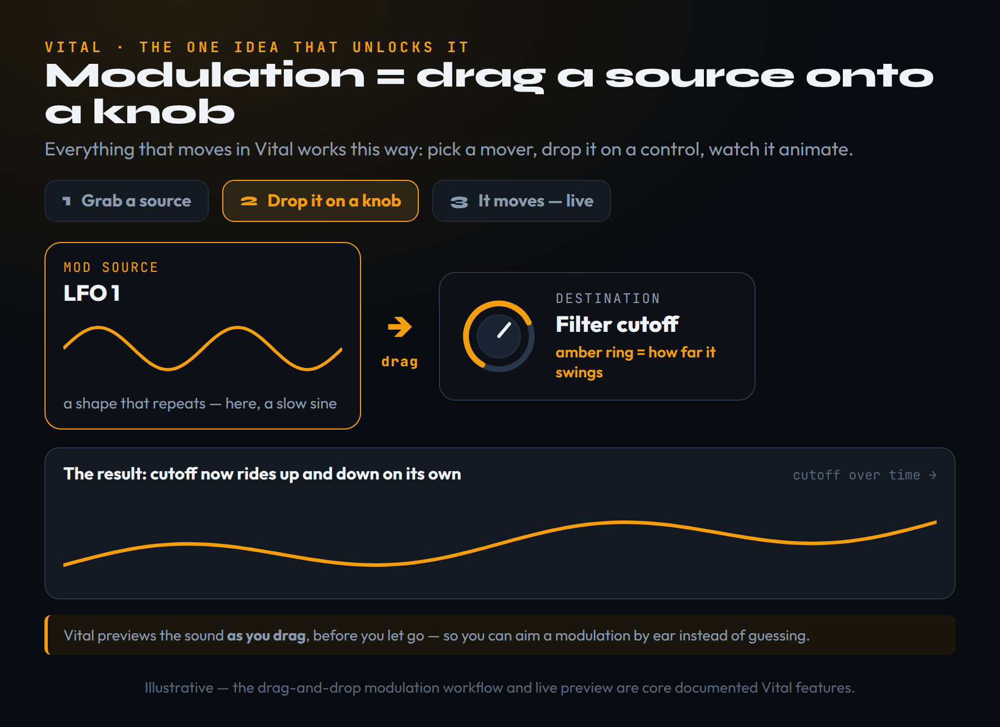
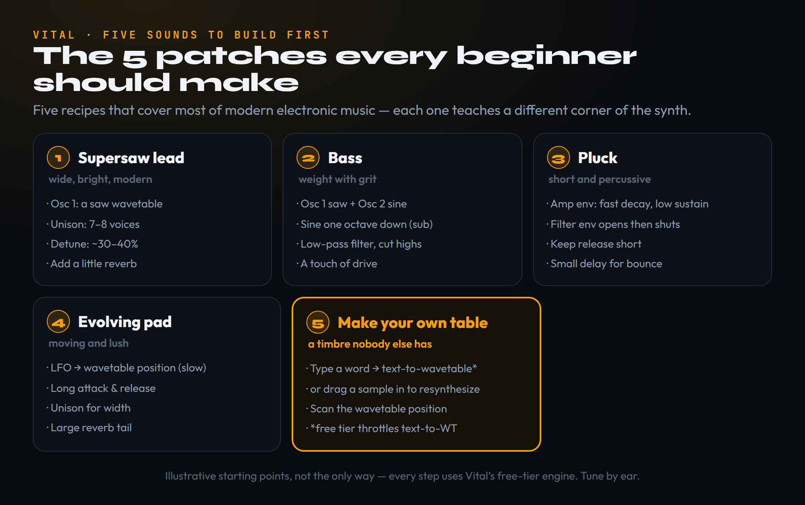

Most producers do not learn synthesis from a textbook; they learn it from the first synth that finally makes the invisible visible. For a remarkable number of people that synth is Vital — not because it is the most powerful instrument they will ever own, but because it is free and it shows you what is happening. Move a knob and the waveform redraws in front of you; drag an LFO onto the filter and you watch the cutoff breathe in real time. Synthesis stops being a wall of abstract terms and becomes something you can point at and predict. The catch that trips up newcomers is the pricing page, which makes Vital look like a stripped demo with paid upgrades waiting to unlock the good parts. It is the opposite: the engine is complete and free, and the paid tiers only add more ready-made content. This guide uses that to its advantage. We teach synthesis itself through Vital — the window, wavetables, and the one modulation idea that unlocks everything — and then build five staple sounds, every step of which works on the free tier, so you finish able to make a lead, a bass, a pluck, a pad, and a timbre that exists nowhere else but your own project.
Vital is the best synth to learn on because it shows you what is happening — every LFO, envelope and filter animates in real time, so synthesis stops being abstract. The whole engine is free: the paid tiers add presets and wavetables, never features, so a beginner can follow every step here at no cost. Learn one idea — modulation is just dragging a source onto a knob — then build five staple sounds in order: supersaw, bass, pluck, evolving pad, and finally your own wavetable from a word or a sample. Download it from vital.audio, drop it on a MIDI track, and start with the init patch.
Why Vital is the synth to learn on
There is a reason Vital ends up being the first real synthesizer thousands of producers ever open: it is the rare instrument that teaches you while you use it. Created by Matt Tytel — the developer behind the earlier Helm synth — and released in November 2020, Vital is a spectral-warping wavetable synthesizer, which is a mouthful that simply means it builds sound from short looping waveforms and then lets you stretch and reshape their harmonics. What sets it apart from the pack is not a feature you can list on a box. It is that the entire interface animates at sixty frames per second on your graphics card, so the moment you move a control you see the consequence: the waveform redraws, the filter curve bends, the LFO traces its shape in real time.
That visual honesty is the best synthesis teacher there is. Most beginners stall not because synthesis is hard but because it is invisible — you turn a knob, something changes, and you cannot tell what. Vital removes the guesswork. When you drag an envelope onto the filter, you watch the cutoff line breathe in and out exactly as the note plays, and the abstract idea of “modulation” becomes something you can point at. If you are still fuzzy on the underlying ideas, our primer on what a synthesizer actually is and our walk through sound-design basics pair perfectly with this guide; everything below assumes only that you know a synth makes a tone you can shape.
The other reason to start here is blunt: it is free, and not in the crippled-demo sense. The full synthesis engine costs nothing, which is why Vital is a fixture on every list of the best free VST plugins worth installing. You can learn real, transferable sound design — oscillators, filters, envelopes, LFOs, modulation routing — without spending a cent, and those skills carry directly to any other wavetable synth you graduate to later. The plan for the rest of this article is simple. We will tour the window, learn the two ideas that unlock everything (wavetables and drag-and-drop modulation), and then build five sounds that cover most of modern electronic music.
The free-versus-paid truth, stated plainly
Before you download anything, understand exactly what you are and are not paying for, because this is the single most confusing thing about Vital and the place producers waste money needlessly. Vital comes in four flavours: Basic (free), Plus ($25), Pro ($80), and a $5/month subscription that rents toward the Pro content. Here is the line that matters, taken straight from the developer: every tier includes Vital with all features; the paid packs add more presets, wavetables, samples and LFO patterns. In other words, the engine is identical across every tier. You are never buying capability. You are buying a bigger starting library of sounds.
Concretely, the free Basic tier ships with roughly seventy-five factory presets and twenty-five wavetables. That is plenty to learn on, and because Vital reads standard wavetable and preset formats, you can expand the free version almost without limit using community packs — a point we return to at the end. The Plus and Pro tiers simply raise those counts (Pro lands in the hundreds of presets and well over a hundred wavetables) and Pro adds cosmetic skins, priority support and a Discord perk. The one practical capability difference that gets reported is the text-to-wavetable generator, which the free tier throttles to a handful of uses per day; we treat that as a paid convenience, not a wall, because you will rarely need more than a few per session while learning.
So the honest recommendation is to start free, full stop. Do not pay until you have built a dozen patches from scratch and genuinely want a larger factory library to remix. If you are weighing it against the obvious paid alternative, our Serum 2 vs Vital comparisons lay out where each pulls ahead; and if you simply want to know whether the synth is worth your hard-drive space at all, the dedicated Vital synth review answers the download question. This guide answers the next one: how to actually make sounds with it.
The window, in one tour
Open Vital on a MIDI track and the layout can look busy, but it is organised with real logic once someone points it out. Across the very top sit four tabs — Voice, Effects, Matrix and Advanced — and you will spend ninety percent of your time on Voice, where the sound is actually built. The Effects tab holds the built-in effects chain, Matrix lists every modulation you have set up in one tidy table, and Advanced hides the housekeeping settings such as voice behaviour and oversampling. Knowing that those last two tabs exist means you stop hunting for things on the Voice page that were never there.
On the Voice page itself, read it left to right like a signal flow. The left and centre belong to the sound sources: three wavetable oscillators and one sample oscillator, each with its own controls for level, pitch, pan and unison. Those feed into two filters — multimode, with both analog-style and digital models — that you can run in series or in parallel. Then comes the output, where the Effects chain and the master live. The right-hand side is reserved for the modulators: the envelopes, the LFOs, and the random sources. Nothing on the right makes a sound by itself; those are the things you drag onto knobs to make the sound move, which is the subject of the next two sections.

Two small touches make the window worth lingering on. The first is the oscilloscope and spectrum viewer at the top, which lets you literally watch your waveform and its harmonic content while you work — invaluable when you are trying to understand why a sound is harsh or thin. The second is the macro strip along the bottom: four assignable knobs that can each drive many parameters at once. Map a macro to, say, brightness and movement, and you have a single performance control that opens up the whole patch. We will not lean on macros while learning, but it is worth knowing they are the bridge from sound design to actually playing the instrument.
Wavetable synthesis in ninety seconds
A wavetable is just a stack of single-cycle waveforms laid one behind the other, like frames in a flip-book. Each frame is one repeating shape — maybe a pure sine at the front, growing into a buzzy saw by the back. On its own, any one frame is a static tone. The magic is the wavetable position control, which scans through the stack and decides which frame (or blend of neighbouring frames) the oscillator is currently reading. Sweep the position knob and you hear the harmonics shift smoothly from hollow to bright, because you are literally morphing from one waveform shape into the next.
This is the heart of why wavetable synths sound “modern” and alive where older subtractive synths can sound static. A plain saw wave never changes; a wavetable can be in constant, gentle motion. The single most powerful beginner technique in the whole instrument is to automate or modulate the wavetable position over time — assign a slow LFO or an envelope to it — so the timbre evolves as the note sustains. That one move turns a flat pad into something that shimmers, and a dull lead into something that opens up as it plays. We will use exactly this trick when we build the evolving pad later.
Vital adds a layer most beginners can ignore at first but should know exists: spectral warp. Where a basic wavetable synth scans between fixed shapes, Vital can reach inside the harmonics of the wave and stretch, shift, smear and skew them, which is what the “spectral-warping” in its name refers to. For now, treat the warp controls as an advanced flavour knob: nudge them when a sound feels too clean and you want grit or strangeness. The fundamentals — pick a wavetable, set a position, and consider modulating that position — are ninety percent of what you need, and they apply to every oscillator on the page.
The one idea that unlocks the whole synth
If you learn only one thing about Vital, learn this: modulation is drag-and-drop. A “modulator” is anything that produces a changing value over time — an envelope that rises and falls when you press a key, an LFO that cycles in a repeating shape, or a random source that wanders. To make any of them control any knob, you literally click the modulator and drag it onto the knob. That is the entire mechanism, and once it clicks, the synth stops being a wall of controls and becomes a small set of sources connected to a small set of destinations.

When you drop a modulator on a control, Vital draws a coloured ring around that knob showing how far the value will swing, and you can drag the ring to set the depth and direction — positive to push the value up, negative to pull it down. Better still, Vital previews the result as you drag, before you let go, so you can aim a modulation by ear instead of guessing and undoing. Want a filter that pulses? Drag an LFO onto the cutoff. Want a sound that gets brighter the harder you play? Drag the velocity source onto cutoff. Want the wavetable to crawl while the note holds? Drag a slow LFO onto wavetable position. Every “moving” sound you have ever admired is some version of this.
The Matrix tab is the bookkeeping view of all of this: it lists every connection you have made — source, destination, amount — in one place, so you can fine-tune or delete routings without hunting around the Voice page. Vital’s modulation sources are unusually rich for a free synth, including stereo-splittable LFOs, multiple envelopes, and several flavours of random (Perlin noise for smooth drift, sample-and-hold for stepped randomness, and more). You do not need them all today. You need to internalise the gesture — grab a source, drop it on a knob — because it is the same gesture for everything, and it is what learning the broader craft of layering and shaping synths ultimately rests on.
The five sounds to build first
Theory is worthless until you have made something, so the rest of this guide is five concrete builds. They are chosen because together they cover the overwhelming majority of parts you will ever need in electronic music — a big lead, a bass, a short rhythmic stab, a lush sustained texture, and a genuinely unique custom timbre — and because each one teaches a different corner of the synth. Build them in order. Each assumes you have started from the default init patch (use the preset menu’s re-initialise option to get a clean single saw oscillator), and each takes only a few controls.

A note on how to practise: resist the urge to load a factory preset and reverse-engineer it on your first day. Presets are superb learning tools later — opening one and asking “which wavetable, which modulation, which effects?” is one of the fastest ways to grow — but starting from a finished sound hides the decisions that made it. Building from init forces you to make each of those decisions yourself, which is the only way the knowledge sticks. With that settled, drop Vital on a track, re-initialise, and let us make the sound that hooks most people first.
Build #1 — the supersaw lead
The supersaw is the wide, bright, slightly euphoric lead behind a huge amount of modern pop, EDM and trance, and it is the most satisfying first build because the payoff is instant. Start from init, where oscillator one is already a saw-style wavetable. The entire trick lives in one control group: unison. Raise the unison voice count to around seven or eight, which stacks that many slightly different copies of the oscillator on every note. Then add detune — somewhere in the region of thirty to forty percent — so those stacked copies drift apart in pitch. That drift between voices, beating against each other, is the supersaw effect; everything else is polish.
With the voices stacked and detuned, spread them in stereo so the copies fan out across the width of the mix — Vital’s unison has a width control for exactly this — and the sound goes from mono and nasal to wide and cinematic. Keep the detune modest: a little reads as “huge,” while too much reads as seasick and out of tune. Roll the filter cutoff back slightly if the top end is harsh, and add a touch of reverb from the Effects tab to set the lead in a space. That is a finished supersaw, and you will hear immediately why it is a staple of trance and future bass alike.
To make it feel expensive, reach for the idea from the wavetable section: assign a slow LFO or an envelope to the wavetable position so the lead subtly evolves as it sustains, rather than sitting still. A second professional touch is to let velocity open the filter — drag the velocity modulator onto cutoff — so harder notes are brighter and the part breathes with your playing. These two moves, movement and dynamics, are what separate a beginner’s static lead from one that sounds produced, and they cost nothing but the drag-and-drop gesture you already learned.
Build #2 — the bass
A great electronic bass is mostly about weight and control, and Vital makes it straightforward. Re-initialise, then build the foundation on two oscillators: keep oscillator one as a saw for harmonic content, and bring in oscillator two as a sine one octave lower to act as a clean sub that carries the actual low-end weight. Splitting the job this way — saw for character, sine sub for power — is the standard professional approach and it gives you independent control over how much grit versus how much rumble the bass has. Balance the two oscillator levels until the sub anchors the note without booming.
Now shape it with the filter. Run a low-pass filter and pull the cutoff down so the bass is dark and focused rather than fizzy; a bass that is too bright fights the rest of the mix and loses its sense of weight. If you want it to sit forward and aggressive, add a small amount of drive or distortion — either from the filter’s built-in drive or an effect — which adds upper harmonics that help the bass cut through on small speakers and phone earbuds where the true sub frequencies barely play. A short, snappy amplitude envelope keeps the note tight; a longer one suits a sustained, rolling bassline.
The corner this build teaches is the relationship between sub and harmonics — the same balance you will tune in every genre from future bass to anything in the broader EDM toolkit. For movement, a classic trick is to modulate the filter cutoff with an envelope so each note opens and closes with a percussive “wow,” or with an LFO synced to your tempo for a wobble. Keep changes small here: bass lives in a narrow frequency band and a little modulation goes a long way before it starts to feel unstable in the low end.
Build #3 — the pluck
Plucks are the short, percussive, melodic stabs that drive arpeggios and rhythmic hooks, and they are entirely a story about envelopes — which makes this build the best one for finally understanding what an envelope does. An envelope describes how a value changes over the life of a note in four stages: attack (the rise when you press), decay (the fall to a held level), sustain (that held level), and release (the fade after you let go). A pluck is what you get when the sound rises instantly and then falls away fast, the way a plucked string does, so the whole event is over in a fraction of a second.
Start from init and shape the amplitude envelope first: a near-instant attack, a fast decay, and a low sustain so the note drops to near-silence quickly even while held. That alone turns a sustained tone into a stab. Then add character with the filter envelope: route an envelope to the filter cutoff so the sound opens bright on the attack and snaps shut a moment later. The order matters — the ear reads that quick brightening-then-darkening as the “ping” of a real pluck. Keep the release short so notes do not smear into each other when you play fast arpeggios.
Two finishing touches make a pluck feel professional. First, a small amount of delay from the Effects tab — ideally tempo-synced — adds rhythmic bounce and turns a single stab into a pattern that fills space. Second, a little reverb gives it air without washing out the rhythm, so dial it back further than you would for a pad. Because a pluck is defined by its envelopes rather than its raw tone, you can swap the wavetable freely and keep the same percussive behaviour, which makes this the most reusable patch of the five — build it once and you have a template for endless melodic parts.
Build #4 — the evolving pad
A pad is the opposite of a pluck: a slow, sustained, evolving texture that sits underneath everything and glues a track together. This is the build where the wavetable and modulation lessons finally pay off in full, because a great pad is mostly movement over time. Start from init and stretch the amplitude envelope the other way from the pluck: a long attack so the sound fades in gently, a high sustain so it holds for as long as the note is down, and a long release so it tails off smoothly rather than cutting out. Already the character is completely different, from the very same starting oscillator.
Now bring it to life with the single most important pad technique: route a slow LFO to the wavetable position. As that LFO crawls, the oscillator morphs slowly through its frames and the timbre shifts continuously, so the pad never sits still and never gets boring under a long chord. Add a couple of unison voices spread wide for stereo size — pads want to feel enormous and enveloping — and consider a gentle second modulation, such as an LFO to the filter cutoff, so the brightness drifts as well. The goal is several slow, independent movements happening at once, which is what makes a texture feel organic rather than looped.
Finish with a generous reverb, and do not be shy with it: a large hall or shimmer reverb is what places a pad in a vast space and lets it blur into a bed of sound. A touch of chorus — Vital’s built-in chorus is genuinely lush — thickens it further. This patch teaches the deepest lesson in the whole guide, which is that the same chain becomes a completely different instrument purely through modulation and envelopes. The bass, the pluck and the pad can all start from one saw oscillator; what makes them distinct is how things move. Internalise that and you can design almost anything.
Build #5 — make a wavetable nobody else has
The first four builds use sounds anyone can make. This last one makes a sound that is uniquely yours, and it is the feature that genuinely sets Vital apart for creative sound design: you can build your own wavetables from scratch. There are two beginner-friendly routes, and both feed Vital’s wavetable editor. The first is text-to-wavetable: type a word and Vital generates a wavetable from the shape of that text. It is a slightly absurd, wonderful feature, and the timbres it produces are unlike anything in a factory library. (Note the free tier throttles this generator to a few uses per day, which is more than enough while you experiment.)
The second route is more powerful and has no usage cap: drag any audio sample — a vocal chop, a field recording, a snippet of another instrument — into the oscillator, and Vital can resynthesise it into a playable wavetable through its pitch-splice and vocode conversion. Suddenly the harmonic fingerprint of a real recording becomes a synth you can play across the keyboard and morph with the position knob. This is how producers get those instantly recognisable, “what synth is that?” timbres: they are not presets, they are custom tables built from unusual source material. It is also the cleanest demonstration of what “spectral” wavetable synthesis really means — you are working directly with the harmonics of a sound.
Once you have a custom wavetable loaded, treat it exactly like any other oscillator: scan the position to find the sweet spots, modulate that position with an LFO for movement, and run it through the filters and effects as usual. The workflow is the reward here, because it closes the loop on everything the guide has taught — sources, position, modulation, effects — while producing something no factory library contains. If this is the part that excites you most, it is also the natural on-ramp to the wider craft covered in our guides to plugins for sound design and the broader field of sound design itself.
CPU, performance, and where to get more — free
Two practical realities will save you frustration. The first is CPU. Vital’s gorgeous animations run on your graphics card rather than your processor, which keeps the audio engine relatively efficient, but the synth can still get heavy when you stack high unison-voice counts and many modulations across several instances. If your laptop starts to crackle, the fixes are simple and in order of impact: drop the oversampling setting on the Advanced tab from its higher modes to 1x while you are arranging, keep unison voice counts to what a patch actually needs rather than maxing them by habit, and bounce or freeze finished synth parts to audio once you are happy with them so they no longer cost live processing. Closing the Vital window when you are not editing also helps on weaker machines, because those sixty-frame animations stop rendering.
The second reality is content. Because Vital’s free tier ships with a deliberately small library, the smart move is to expand it with the large community of free presets and wavetables that the format supports — third-party packs load identically across every tier, so the free version can grow almost without limit. Browsing other people’s patches is also, as noted earlier, one of the fastest ways to learn: open a preset, switch to the Matrix tab to see every modulation it uses, and you have a free masterclass in how a sound was constructed. Steal the technique, not the sound — identify what makes a patch interesting and apply that idea to your own work.
From here, the path forward is to keep building. Every part in a track is some combination of the five patterns you just learned, and the only way to get fast is repetition until the gestures are automatic. When you eventually want to compare Vital against the paid heavyweight it is most often measured against, our Serum vs Vital breakdown is the place to look, and if you are assembling a wider rig, our roundups of the best synth plugins and the best free VST plugins show where Vital fits. If you have already met Native Instruments’ offering, our guide to using Massive X covers the same five staple sounds from a different synth’s perspective — the skills transfer almost entirely, which is the whole point of learning them in Vital first. Whatever you reach for, you now have the one thing every synth shares: the knowledge that a sound is just a source, shaped by a filter and an amplifier, and brought to life by things you drag onto knobs — and a quick check of what a VST3 plugin is if you are still setting your DAW up to host it.
Build the Sound: 3 Drills
Run these in order in Vital’s free Basic tier. Each one turns a piece of this guide from something you read into something your hands know — and none of them needs a single paid feature.
- Re-initialise Vital to the default single saw oscillator — do not load a preset.
- Using only the unison controls, raise the voice count to seven or eight, add roughly thirty to forty percent detune, and widen the stereo spread until the lead sounds full and wide.
- Add a little reverb and roll the cutoff back if it is harsh. You have made a staple sound from scratch and proven you do not need presets to get a professional result.
- Start from any simple patch and pick a single destination — the filter cutoff is ideal.
- In turn, drag an envelope onto cutoff (so it opens on each note), then remove it and drag an LFO onto cutoff (so it pulses), then remove that and drag the velocity source onto cutoff (so harder notes are brighter).
- Listen to how the same knob feels completely different depending on what is driving it. This is the core skill of the whole instrument: not the knobs, but what you connect to them.
- Find a short, interesting audio clip — a vocal chop, a bit of a field recording, or one note of an acoustic instrument — and drag it into one of Vital’s oscillators to resynthesise it into a wavetable.
- Scan the wavetable position to find the most usable frames, then route a slow LFO to that position so the custom timbre evolves as it plays.
- Run it through the filters and a touch of reverb and play a melody. You have built an instrument from raw audio that exists nowhere else — the clearest payoff of spectral wavetable synthesis.
Frequently Asked Questions
It is genuinely free, and it is the full synthesis engine — not a demo. There are no time limits, no watermarks and no audio interruptions. The free Basic tier includes around seventy-five presets and twenty-five wavetables; the paid Plus, Pro and subscription tiers add more presets, wavetables, samples and LFO patterns, but the developer states every tier includes Vital with all features. You are paying for content, never capability, so a beginner can do everything in this guide at no cost.
They are close enough that the honest answer is “it depends.” Vital wins on price (free versus paid) and on its drag-and-drop modulation, which many producers find faster than Serum’s matrix; Serum has historically had a larger preset ecosystem and a slightly different character. For learning synthesis, Vital’s real-time visual feedback gives it an edge. Our Serum 2 vs Vital comparisons go through it parameter by parameter, but for a first synth, start with Vital — and if you do pick up Serum, our Serum 2 tutorial builds the same staple patches there.
That modulation is drag-and-drop. Almost everything that makes a synth sound alive — movement, dynamics, evolution — comes from connecting a source (an envelope, LFO or random generator) to a destination (any knob) by dragging it there. Once that gesture is automatic, the rest of the instrument is just choosing which source and which destination. It is the same move whether you are modulating filter cutoff, wavetable position or pitch.
A wavetable is a stack of single-cycle waveforms, like frames in a flip-book, ranging from one shape to another. The wavetable-position control scans through that stack, choosing which frame the oscillator reads, so sweeping it morphs the timbre smoothly from one shape to the next. Modulating the position over time — with a slow LFO, for instance — is the most powerful beginner technique for creating evolving, non-static sounds.
Vital’s animations run on your GPU, which keeps the audio engine fairly efficient, but high unison-voice counts and many simultaneous modulations across several instances do add up. Drop the oversampling on the Advanced tab to 1x while arranging, keep unison voices to what a patch needs, close the plugin window when you are not editing, and bounce or freeze finished parts to audio. Those four steps resolve nearly every performance complaint.
You can make everything yourself, and you should, because building from the init patch is how the knowledge sticks. This guide builds five staple sounds — supersaw, bass, pluck, pad and a custom wavetable — entirely from scratch. Presets are excellent learning tools later: open one, check the Matrix tab to see how it is wired, and steal the technique. Vital also reads a large library of free community presets and wavetables if you want to expand its sounds.
Vital runs on Windows 10, macOS 10.15 and above (Intel and Apple Silicon), and Ubuntu Linux 18.04 and above, and it needs a graphics card that supports OpenGL 3 or higher for its animations. It is available as a VST, VST3, AU and LV2 plugin, so it loads in essentially every modern DAW. If you are still wiring up your DAW to host plugins, our explainer on what a VST3 plugin is covers the basics.
Here. Download Vital’s free Basic tier from vital.audio, drop it on a MIDI track, re-initialise to the default saw, and work through the five builds in this guide in order. Pair it with our primers on what a synthesizer is and sound-design basics, and you have a complete, zero-cost path into real, transferable sound design that carries to any synth you use next.